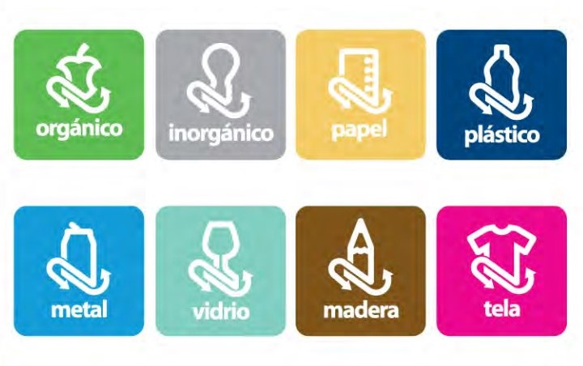
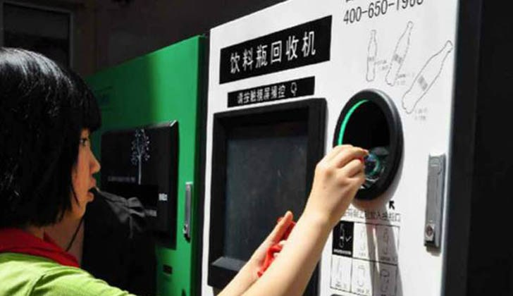

Cajerin: El cajero Reciclador
La opción para concientizar sobre la separación de residuos
Este es un llamado a la sociedad para generar conciencia sobre la basura que genera día con día en el aeropuerto internacional de México.
Desde siempre las salas de espera y cualquier parte del aeropuerto han estado rodeadas de botes de basura, pero al final toda esa basura termina en piso.
Pero en el año 2007 se realizó una nueva implementación de botes de basura específicos, los cuales señalan con un
sistema de colores y nombres la separación de plástico, aluminio, papel, desperdicio, etc.

En este caso, nosotros el Tecnológico de Estudios Superiores de Cuautitlán Izcalli, de la carrera de ingeniería en sistemas,
hemos decidido crear “Cajerin: el cajero reciclador”. Este cajero consiste en depositar, pet, aluminio y vidrio y se encargara de separar
los residuos a donde corresponde, dando al usuario como recompensa puntos recolectables, y que serán canjeables para obtener un descuento en
su boleto de avión y/o también en algunas tiendas participantes.

Quieres saber más de este proyecto, checa la información de los botones siguientes y diviertete.
Creadores: Moreno Nicolas René Stephany y Pallares Camarillo Julio Cesar